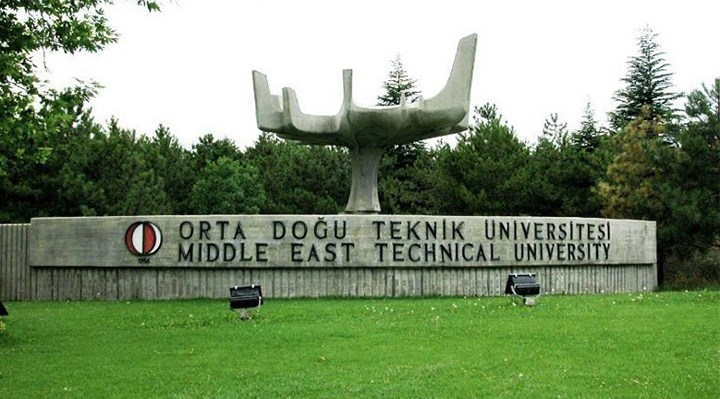
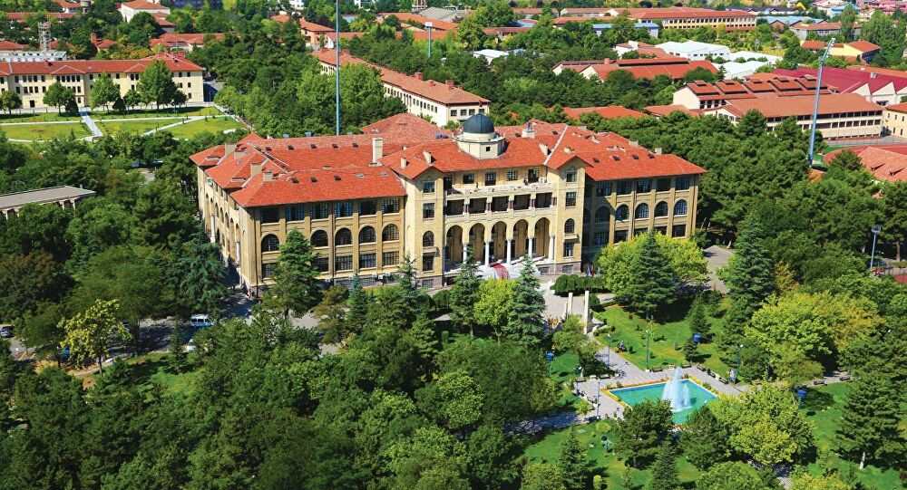

Middle East Technical University
Middle East Technical University (METU), a state university founded in 1956, currently has about 27,000 students.
Undergraduate and graduate students from many countries attend a semester or a year-round at METU as "Special Student" or "Exchange Student".
Read More...

Gazi University
It was established by separating from Gazi University as of May 2018. With 9 Faculties, 3 Vocational Schools, 3 Vocational Schools and 1 Conservatory, it is one of the youngest structurally and the most experienced higher education institutions in Turkey.
Read More...
Bilkent University
İhsan Doğramacı Bilkent University, founded in Ankara in 1984, is the first foundation university in Turkey.
Read More...
Ankara University
The foundations of Ankara University, which was established in 1946 with the slogan of "the science sun of the republic", date back to the Republican period.
Read More...

Hacettepe University
Hacettepe University was established in 1967. Education languages are Turkish, English, German and French. The most successful students of Turkey, from health to engineering, from law to economics and administrative sciences, from literature to education, prefer Hacettepe.
Read More...